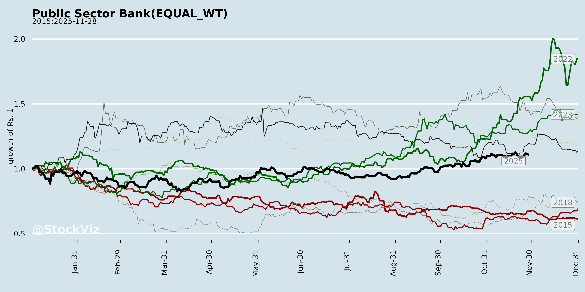
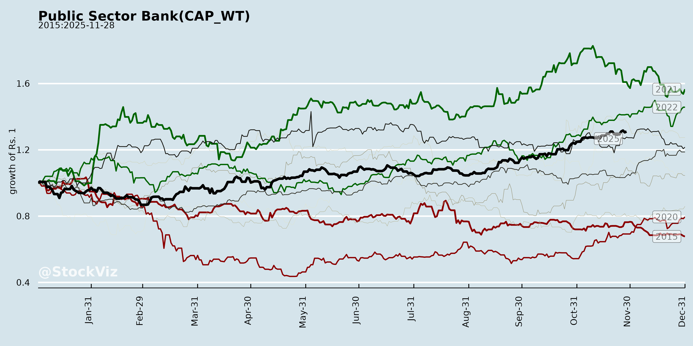
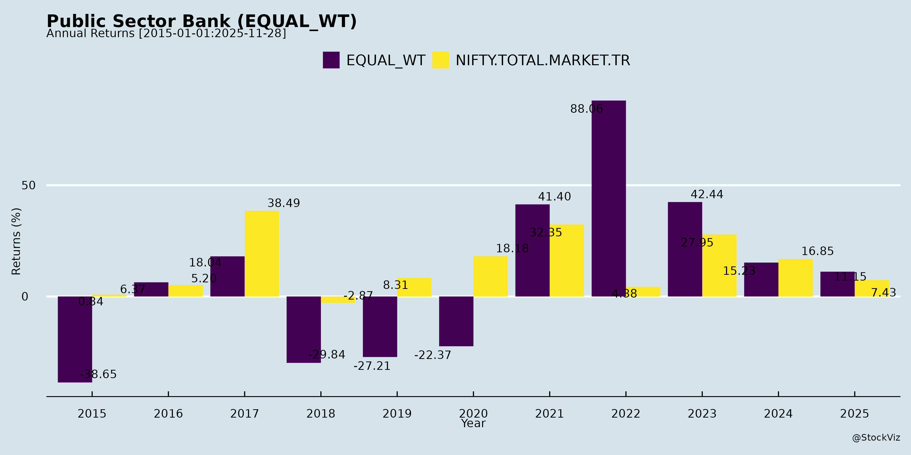
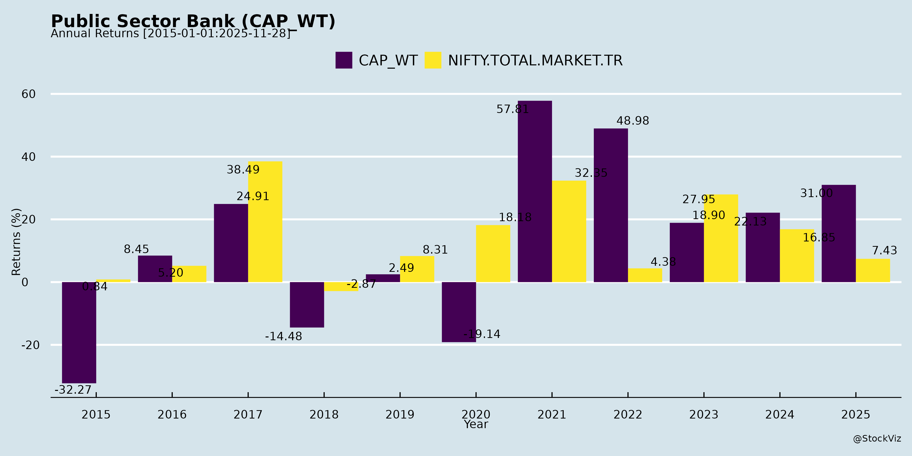
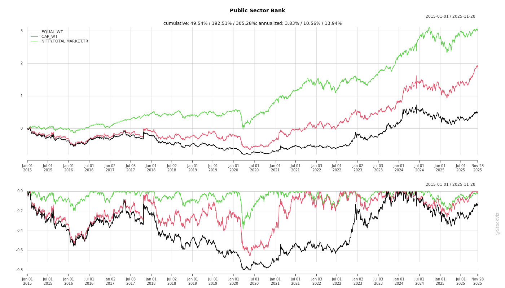
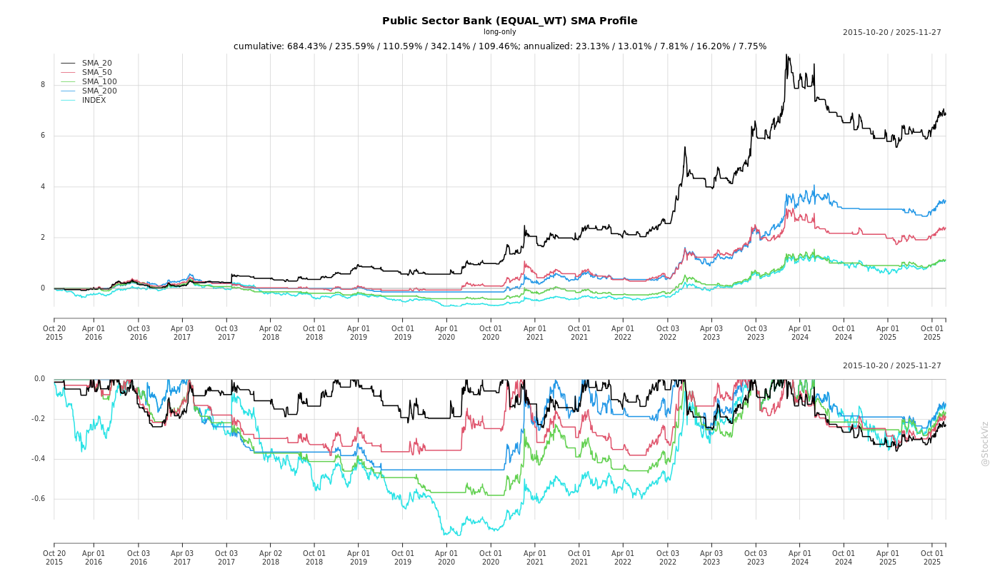
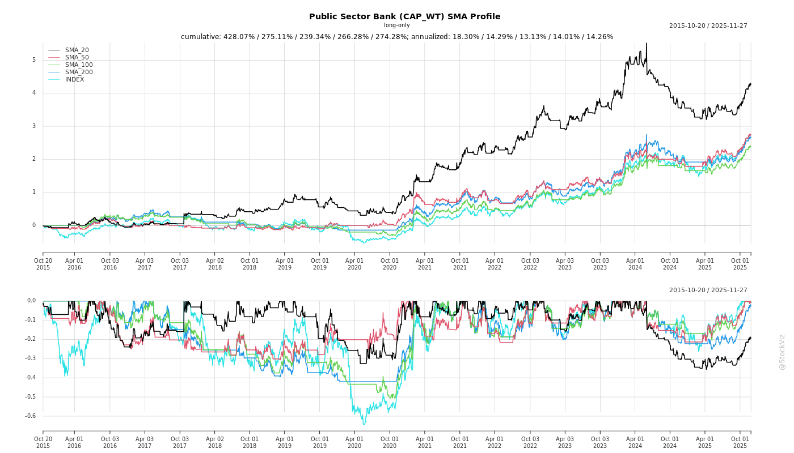
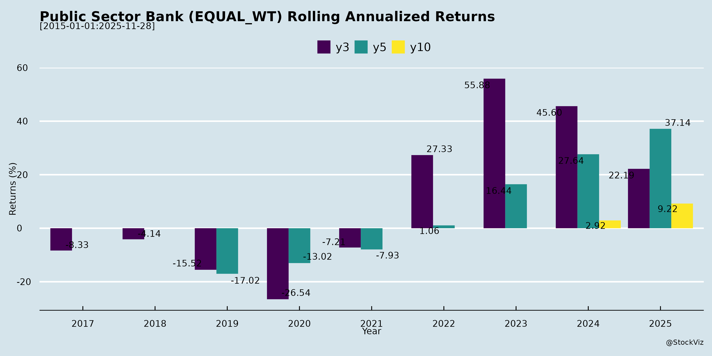
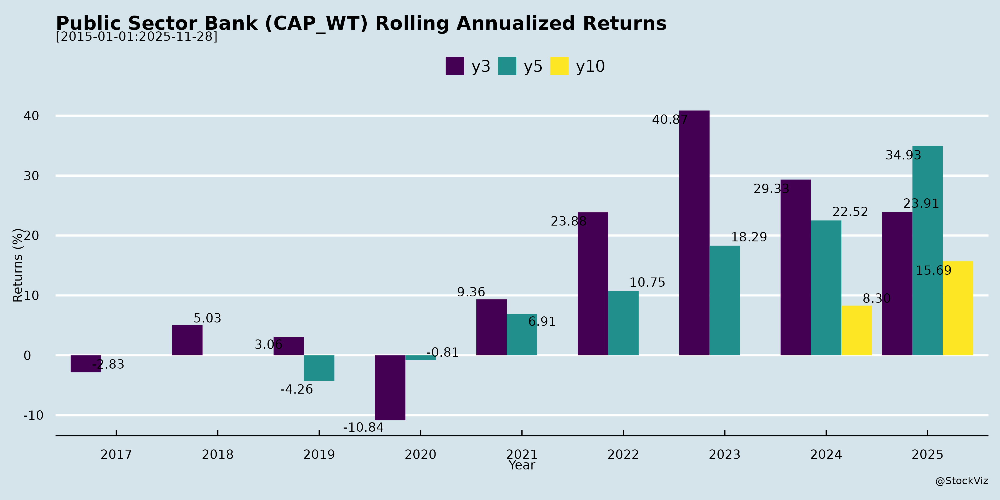

asof: 2025-11-30
Summary Analysis of Indian Public Sector Banks (PSBs) from Q2 FY26 Disclosures
The provided documents from major PSBs (e.g., SBI, PNB, Canara Bank, Indian Bank, Union Bank, IOB, Bank of India, Bank of Maharashtra, UCO Bank, Central Bank of India, Punjab & Sind Bank) reveal a sector characterized by resilient recovery post-PCA legacies, with strong emphasis on RAM (Retail, Agri, MSME) growth, digital transformation, and asset quality improvements. Overall business growth averaged 12-15% YoY, profitability rose (ROA ~1-1.2%), but NIM pressures persist. Below is a structured analysis of headwinds, tailwinds, growth prospects, and key risks.
Headwinds (Challenges Pressuring Performance)
Tailwinds (Positive Momentum Drivers)
Growth Prospects (Opportunities Ahead)
Key Risks (Potential Vulnerabilities)
Overall Outlook: PSBs are in a strong turnaround phase (asset quality/profitability tailwinds dominant), targeting 12-16% growth amid digital pivot. Headwinds (NIM/CASA) are cyclical but manageable via RAM focus and fee diversification. Risks (ECL, rates) loom but buffers (capital, PCR) mitigate; FY26 ROA >1.1% feasible with treasury rebound. Sector poised for sustained 10-15% growth if execution holds.
asof: 2025-12-01
Summary Analysis of Indian Public Sector Banks (PSBs) Sector
Using the provided announcements from PSBs (e.g., SBI, BoB, PNB, Canara, Indian Bank, Union Bank, IOB, BoI, BoM, UCO, Central Bank, PSB), the sector exhibits resilience amid regulatory scrutiny and operational improvements. Key insights are derived from financial updates, regulatory disclosures, ratings, and strategic moves. Below is a structured analysis of tailwinds, headwinds, growth prospects, and key risks.
Tailwinds (Supportive Factors)
Headwinds (Challenges)
Growth Prospects
Key Risks
Overall Outlook: PSBs are on a strong recovery trajectory (asset quality/capital tailwinds dominant), with 10-15% growth feasible via digital/infra plays. However, operational discipline and macro resilience are critical to sustain momentum. Sector RoA could hit 1%+ by FY26-end, but penalties signal execution risks. Investors should watch Q3 business updates and RBI commentary.
asof: 2025-11-30
Analysis of Indian Public Sector Banks (PSBs) based on Q2 FY26 Disclosures and Earnings Transcripts
The provided documents cover disclosures and earnings call transcripts from major PSBs (e.g., SBI, PNB, Canara Bank, Union Bank, Indian Overseas Bank, Bank of India, Bank of Maharashtra, UCO Bank, Central Bank of India, Punjab & Sind Bank). These reveal a sector characterized by steady recovery post-PCA legacies, with common themes in performance. Below is a structured analysis of headwinds, tailwinds, growth prospects, and key risks, followed by a summary.
Tailwinds (Positive Factors)
Headwinds (Challenges)
Growth Prospects
Key Risks
Summary
PSBs exhibit resilient recovery with tailwinds from superior asset quality (GNPA/NNPA ↓, PCR ↑), RAM-led growth (15-20%), and digital/HR momentum driving ROA >1% and profitability. Headwinds include NIM squeeze (repo cuts, CASA ↓) and high cost-income, tempering operating profits. Growth prospects are strong in RAM/digital/co-lending (target 15-17% advances), branch expansion, and fee streams (treasury, recovery), supported by healthy CRAR (17%+). Key risks center on ECL (manageable via buffers/glide path), slippages, and macros, but conservative underwriting (CIBIL >681, CMR 1-5) mitigates. Overall, sector outlook positive for FY26 (credit 12-17%, ROA 1-1.1%), with focus on efficiency (cost-income <55%) and RAM (60%+).
asof: 2025-11-29
Summary Analysis of Indian Public Sector Banks (PSBs) Sector
Based on the provided press releases from 12 major PSBs (SBI, PNB, Canara Bank, Indian Bank, Union Bank, IOB, Bank of India, Bank of Maharashtra, UCO Bank, Central Bank of India, Punjab & Sind Bank, and others) for Q1/Q2 FY26 (as of Sep 2025), the sector demonstrates robust recovery and resilience. Key metrics show YoY business growth of 10-15%, deposit/advance expansion, sharp asset quality improvements (GNPA down 100-200 bps), and profit growth of 10-60%. However, QoQ variations and macro pressures persist. Below is a structured analysis of headwinds, tailwinds, growth prospects, and key risks.
Tailwinds (Positive Drivers)
Headwinds (Challenges)
Growth Prospects
Key Risks
Overall Outlook: PSBs are in a strong upcycle (asset quality + profitability peak), with tailwinds outweighing headwinds. Growth prospects are high (12-15% business CAGR) if macro holds, but risks center on margins and NPAs. Sector PE could rerate to 8-10x on sustained ROA>1.2%. Leaders (SBI, BoM, IOB) outperform; laggards need efficiency push. Investors should monitor Q3 NIM/CD ratios.
Copyright © 2023 SAS Data Analytics Pvt. Ltd. All rights reserved.